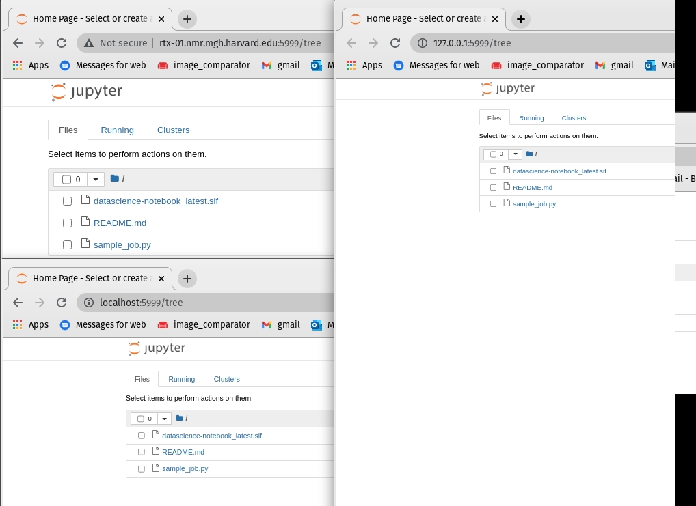
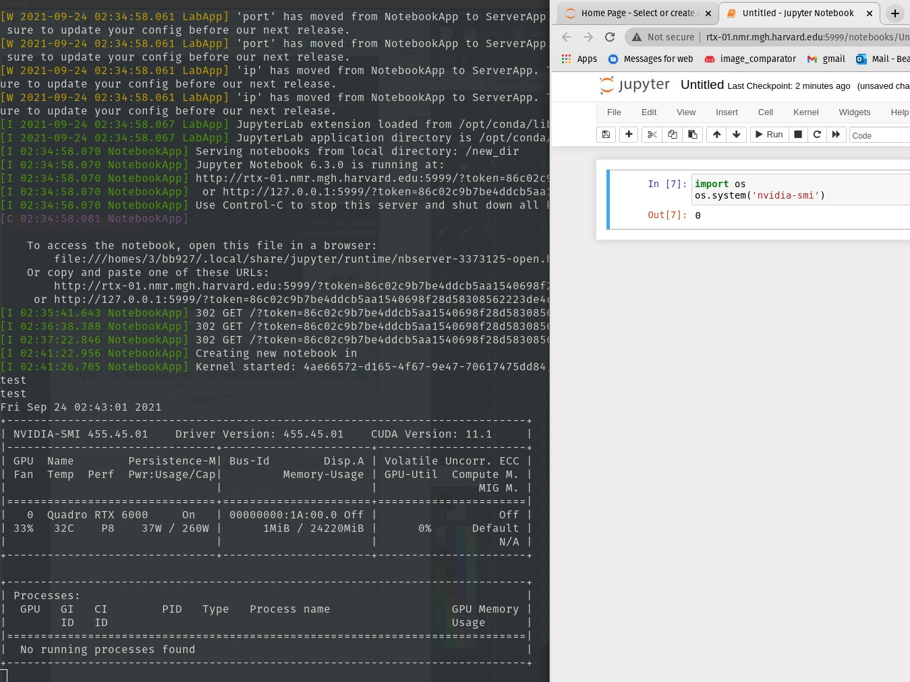
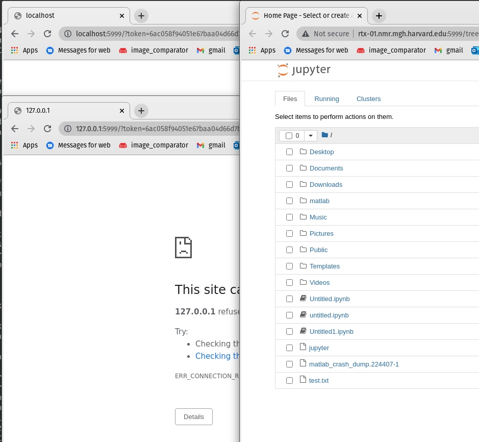

Welcome To The Martinos Center
Locate the Intranet in the top right on the homepage. This hosts all things Martinos related and should be your first stop for information.
Other userful links within the intranet:
- Compute Resources
- Frequently Asked Questions
- Martinos User Information (sometimes more granular about technical things)
Pre-requisites:
- Partners ID
- Martinos Account
- MLSC Access
Loggin in
Test access by sshing into mlsc.nmr.mgh.harvard.edu while on the Partners VPN (scroll down a little).
You should be able to do this in the CMD in Windows or your terminal in MacOS\Linux.
Ex:
bbearce@pop-os:~$ ssh bb927@mlsc.nmr.mgh.harvard.edu
/$$ /$$ /$$ /$$$$$$ /$$$$$$
| $$$ /$$$| $$ /$$__ $$ /$$__ $$
| $$$$ /$$$$| $$ | $$ \__/| $$ \__/
| $$ $$/$$ $$| $$ | $$$$$$ | $$
| $$ $$$| $$| $$ \____ $$| $$
| $$\ $ | $$| $$ /$$ \ $$| $$ $$
| $$ \/ | $$| $$$$$$$$| $$$$$$/| $$$$$$/
|__/ |__/|________/ \______/ \______/
Please cite the Massachusetts Life Sciences Center
on your posters and publications for any data analyzed
on this cluster.
<><><><><><><><><><><><><><><><><><><><><><>
Last login: Wed Sep 22 16:06:16 2021 from 10.251.11.74
mlsc-login[0]:~$
Home Directories and Data
Home Directories
We have user accounts that are synced between all martinos machines and they all live on a drive managed by help desk. In order to keep space concerns down with 100s of users, they limit our space allowance to the point where it is unusable for more than configuratoin or tiny tests.
Therefore everything (99% of everything) is stored on hard drives or network storage.
Because of this the most important step is to symlink some important directories to change where the data stored for various programs (docker, singularity, python) will show up ultimately (not in ~/).
Notice how
pwdprints something like /homes/#/\<username> rather than /home/\<username>. This is because we all live in /homes which is special directory (drive) managed by Help Desk.
Ex:
mlsc-login[0]:~$ pwd
/homes/3/bb927
Drives and Network Storage
- Main Storage: /cluster/qtim - 20TB # Standard cluster storage.
- New Storage: /vast/qtim - 2TB # Ultra Fast and was bought with the cluster's grant money.
Drives
There are no drives on the cluster. We do have our own Desktops and Servers in the QTIM lab, however that is not the focus of this tutorial.
We will need to dip into this a little in the Singularity section at the end of this tutorial as we need a drive to build Singularity images.
Network Storage
As the name implies /cluster/qtim is our lab's (QTIM) storage for use with the cluster. Everyone has a user folder as demonstrated here:
mlsc-login[0]:~$ ls /cluster/qtim
ID-qtim machine_backups users
mlsc-login[0]:~$ ls -la /cluster/qtim/users
total 154
drwxrwsr-x. 20 bb927 qtim 20 Sep 21 16:26 .
drwxrws---. 4 root qtim 5 May 23 10:05 ..
drwxrwsr-x. 13 ai347 qtim 28 Aug 2 15:32 ai347
drwxrwsr-x. 22 apv12 qtim 41 Sep 5 16:46 apv12
drwxrwsr-x. 2 aza24 qtim 3 Jun 4 12:47 aza24
drwxrwsr-x. 15 bb927 qtim 24 Aug 5 18:14 bb927
drwxrwsr-x. 4 cl48 qtim 4 May 11 14:14 cl48
drwxrwsr-x. 3 cni1 qtim 3 Sep 21 17:07 cni1
drwxrwsr-x. 5 cpb28 qtim 5 Mar 4 2021 cpb28
drwxrwsr-x. 2 dd86 qtim 2 Apr 28 21:50 dd86
drwxrwsr-x. 5 gc660 qtim 6 Sep 22 14:41 gc660
drwxrwsr-x. 3 ij063 qtim 3 Aug 11 12:52 ij063
drwxrwsr-x. 9 jn85 qtim 9 Jul 21 13:26 jn85
drwxrwsr-x. 3 kalpathy qtim 3 Aug 4 2020 kalpathy
drwxrwsr-x. 7 nt771 qtim 52 Sep 20 08:20 sakshi
drwxrwsr-x. 10 sf172 qtim 10 May 28 14:20 sf172
drwxrwsr-x. 15 si74 qtim 20 Sep 11 06:38 si74
drwxrwsr-x. 2 bb927 qtim 4 Sep 21 17:31 slurm_jobs
drwxrwsr-x. 27 va914 qtim 35 Aug 2 13:12 va914
drwxr-sr-x. 35 bb927 qtim 43 Sep 10 2019 yifen
Go ahead and make yourself a directory here.
Note we do not have sudo on these machines and everyone owns their own folder and are in the qtim group. These are denoted in columns 3 and 4. We can technically add data to each others folders in their default state so becareful.
Ex:
<permissions>. <hard-links> <user> <group> <size> <Month Day Time> <item>
This is the official place to do work, store data and code.
This location is available you from any Martinos machine. It is 20TB large but we have a tendancy to fill up data fast. I'm in the process of clearing some out so don't worry, but there is enough room for this demo.
Anaconda
We will need a python source for part of this demo. The Martinos center has setup an Anaconda distribution we can use thathas scientific modules as part of it.
For now run this:
export PATH=/usr/pubsw/packages/python/anaconda3.7/bin:${PATH}
Now you can use python:
mlsc-login[0]:bb927$ python
Python 3.7.3 (default, Mar 27 2019, 22:11:17)
[GCC 7.3.0] :: Anaconda, Inc. on linux
Type "help", "copyright", "credits" or "license" for more information.
>>>
and list conda packages available:
mlsc-login[0]:bb927$ conda list
# packages in environment at /usr/pubsw/packages/python/anaconda3-2019.03:
#
# Name Version Build Channel
_ipyw_jlab_nb_ext_conf 0.1.0 py37_0
_libgcc_mutex 0.1 main
_r-mutex 1.0.0 anacondar_1
_tflow_select 2.1.0 gpu
absl-py 0.7.1 py37_0
alabaster 0.7.12 py37_0
...
...
Additional instructions show you how to set your system path and properly install new packages.
Submitting Jobs
The Martinos Center Help Desk has created official instructions for the Cluster's use located at https://it.martinos.org/mlsc-cluster/.
It uses SLURM to manage work loads.
The Martinos cluster docs above give the details but the most important piece is the resources available:
| Description | #Nodes | #Cores | RAM | #GPU | Partition | Scratch |
|---|---|---|---|---|---|---|
| Dell R440 Server | 30 | 24 | 384GB | none | basic | 1.5TB |
| RTX 6000 GPU Server | 2 | 32 | 1.5TB | 8 | rtx6000 | 7.0TB |
| RTX 8000 GPU Server | 5 | 32 | 1.5TB | 4 have 10, 1 has 4 | rtx8000 | 7.0TB |
| NVIDIA DGX A100 | 4 | 64 | 1.0TB | 8 | dgx-a100 | 14TB |
- R440 Server - CPU compute cluster
- RTX6000 - 24GB GPU RAM
- RTX8000 - 48GB GPU RAM
- A100 - 40GB GPU RAM (Newest, fastest and almost largest)
Namely the Partition column. This is the resource you will select later. The 1st is a CPU and the last 3 are incrementally larger/faster GPUs.
You should already be signed in. Change directory to the qtim cluster network storage now (be sure to have made your own directory with mkdir <username> where \<username> is your Partners ID and it should be located at /cluster/qtim/users/. Also this directory is one level higher than your user directory):
Ex:
mlsc-login[0]:~$ cd /cluster/qtim/users
Notice a non-user directory called slurm_jobs
mlsc-login[0]:users$ ls slurm_jobs
README.md sample_job.py
Here you will find a README.md file for using the cluster. It follows from the notes in the link above, but I find it handy. In it you will find two main ways to use the job scheduler SLURM.
They are:
$ jobsubmit -p rtx6000 -A qtim -m 128G -t 0-00:5:00 -c 3 -G 1 -M ALL --mail-user bbearce@mgh.harvard.edu python sample_job.py
and
srun -p rtx6000 -A qtim --mem 4G -t 0-00:1:00 -c 3 -G 1 --mail-user bbearce@mgh.harvard.edu --pty /bin/bash
Let's break the flags down:
Required argument flags:
-A <account> Fairshare/billing account to use (qtim)
-m <memlimit> Max memory your job will use before killed (RAM).
-p <partition> Partition to submit the job to (machine type)
-t <timelimit> Max real time job will use before killed (DD-HH:MM:SS)
Other optional flags:
-c <numcores> Number of cores per node required (default 1)
-G <numgpus> Number of GPUS required (default 0)
-M <mailtype> Send mail events. Comma separated list of:
BEGIN, END, FAIL, REQUEUE, ALL (previous four),
TIME_LIMIT_90, TIME_LIMIT_80, TIME_LIMIT_50,
ARRAY_TASKS, NONE (default)
--mail-user <user> Send mail to <user> (default is current user)
The more readable versions are:
$ jobsubmit -p rtx6000 \
-A qtim \
-m 128G \
-t 0-00:5:00 \
-c 3 \
-G 1 \
-M ALL \
--mail-user bbearce@mgh.harvard.edu \
python sample_job.py
$ srun -p rtx6000 \
-A qtim \
--mem 128G \
-t 0-00:5:00 \
-c 3 \
-G 1 \
--mail-user bbearce@mgh.harvard.edu \
--pty /bin/bash
jobsubmit allows for running of a script file while srun allows interactice mode.
Script Execution
Let's try to submit a script (sample_job.py), but first let's open it:
/cluster/qtim/users/slurm_jobs/sample_job.py
import torch
if __name__ == "__main__":
gpu_status = torch.cuda.is_available()
with open("/cluster/qtim/users/bb927/slurm_jobs/output.txt", "w") as f:
f.write("Did this work? GPUs available: {}".format(gpu_status));
This when run, will put a file called output.txt in /cluster/qtim/users/bb927/slurm_jobs. However you might not have made slurm_jobs in your user directory yet so go ahead and create it and also copy sample_job.py to your slurm_jobs directory. Ex:
mlsc-login[0]:bb927$ mkdir /cluster/qtim/users/bb927/slurm_jobs
mlsc-login[0]:bb927$ cp ../slurm_jobs/sample_job.py ./slurm_jobs/
Next change your copy of sample_job.py to edit the user folder to your own:
from:
with open("/cluster/qtim/users/bb927/slurm_jobs/output.txt", "w") as f:
to:
with open("/cluster/qtim/users/<user directory you already made made>/slurm_jobs/output.txt", "w") as f:
Now we should be able to execute this. Change directories into your personal slurm_jobs folder and run this command substituting your --mail-user (email address):
jobsubmit -p rtx6000 -A qtim -m 128G -t 0-00:5:00 -c 3 -G 1 -M ALL --mail-user bbearce@mgh.harvard.edu python sample_job.py
You will get an email and eventually output.txt will be in your slurm_jobs directory:
mlsc-login[0]:slurm_jobs$ ls
README.md sample_job.py
mlsc-login[0]:slurm_jobs$ ls
output.txt README.md sample_job.py
Look inside output.txt:
mlsc-login[0]:slurm_jobs$ cat output.txt
Did this work? GPUs available: True
That is how you submit a script.
Interactive Mode
Maybe you haven't written a script yet or any pipeline. You can reserve access with srun and --pty /bin/bash.
srun -p rtx6000 \
-A qtim \
--mem 4G \
-t 0-00:1:00 \
-c 3 \
-G 1 \
--mail-user bbearce@mgh.harvard.edu \
--pty /bin/bash
[bb927@rtx-01 slurm_jobs]$
Notice how your terminal changes to indicate that you are connected to another server:
[bb927@rtx-01 slurm_jobs]$ hostname
rtx-01.nmr.mgh.harvard.edu
This is the normal hostname:
mlsc-login[0]:slurm_jobs$ hostname
mlsc-login.nmr.mgh.harvard.edu
If you can't get a job it's because the "fair share" system implemented to make sure everyone has fair access is not letting you as all those resources are spoken for. Usually the smaller resources are more in demand so for demo purposes we can choose large compute and little time to ensure we get something.
Ex:
rtx-01[0]:slurm_jobs$ srun -p rtx6000 \
> -A qtim \
> --mem 4G \
> -t 0-00:1:00 \
> -c 3 \
> -G 1 \
> --mail-user bbearce@mgh.harvard.edu \
> --pty /bin/bash
srun: Job 565212 step creation temporarily disabled, retrying (Requested nodes are busy)
Try an RTX 8000 then:
srun -p rtx8000 \
-A qtim \
--mem 4G \
-t 0-00:1:00 \
-c 3 \
-G 1 \
--mail-user bbearce@mgh.harvard.edu \
--pty /bin/bash
rtx-06[0]:slurm_jobs$
And if all else fails, try an A100 then:
srun -p dgx-a100 \
-A qtim \
--mem 4G \
-t 0-00:1:00 \
-c 3 \
-G 1 \
--mail-user bbearce@mgh.harvard.edu \
--pty /bin/bash
A100-04[0]:slurm_jobs$
Once in a machine you can look around but know it's a different server. Also notice how /cluster/qtim is still available. This is key as our network storage is always available on every node (server) in the cluster.
rtx-01[0]:slurm_jobs$ ls /cluster/qtim
ID-qtim machine_backups users
I'm also in the starting directory I ran the script from and I can also run the previous script from here too:
rtx-01[0]:slurm_jobs$ pwd
/cluster/qtim/users/bb927/slurm_jobs
rtx-01[0]:slurm_jobs$ python sample_job.py
rtx-01[0]:slurm_jobs$ ls
output.txt sample_job.py
Singularity
Martinos Singularity Instructions
In a nut shell this is what needs to be executed:
Create singularity folder in your cluster user space
(make sure ~/.singularity does not already exist first)
mlsc-login[0]:~$ cd /cluster/qtim/users/bb927
mlsc-login[0]:~$ mkdir singularity
mlsc-login[0]:~$ ln -s /cluster/qtim/users/bb927/singularity ~/.singularity
You can now put things in either ~/.singularity or /cluster/qtim/users/bb927/singularity and they will be in /cluster/qtim/users/bb927/singularity.
Set some environment variables
mkdir ~/.singularity/tmp
export SINGULARITY_TMPDIR=~/.singularity/tmp
mkdir ~/.singularity/cache
export SINGULARITY_CACHEDIR=~/.singularity/cache
(do this or singularity will fill up workstation OS disk at /tmp) (in fact put this setting in your .bashrc or .cshrc)
Test by listing home directory:
Ex.
mlsc-login[0]:bb927$ ls -la ~
...
lrwxrwxrwx. 1 bb927 bb927 37 Sep 24 01:38 .singularity -> /cluster/qtim/users/bb927/singularity
...
Using Premade Containers
You might need an account on DockerHUB
Build
We will be bootstraping our containers from DockerHUB.
Ex:
mlsc-login[0]:bb927$ singularity build ubuntu.simg docker://ubuntu:latest
WARNING: 'nodev' mount option set on /autofs/cluster/qtim, it could be a source of failure during build process
INFO: Starting build...
...
When done view it:
mlsc-login[0]:bb927$ ls
ubuntu.simg
Shell Into Container
Shell into it with singularity shell:
mlsc-login[0]:test$ singularity shell ubuntu.simg
Singularity>
You can execute code and look around.
Must know:
[1] Images are read-only by default...more on that later.
[2] You are not root inside your image, but rather your username on linux (Ex: bb927).
[3] Remember Singularity wants to auto --bind mount these 3 directories in the background whether you say to or not: * /home/$USER * /tmp * $PWD
[4] For editable images (sandboxes) you must create your mount points ahead of time in the sandbox. (More shortly)
Let's talk about [3] real quick. If you do an ls it looks like we are in our home directory. Inside this container Singularity is making /homes/3/bb927 point to /homes/3/bb927 on the mlsc. This means anything you write here will be available if you exit the container.
Singularity> ls
Desktop Downloads Pictures Templates Untitled1.ipynb jupyter matlab_crash_dump.224407-1 untitled.ipynb
Documents Music Public Untitled.ipynb Videos matlab test.txt
Singularity> pwd
/homes/3/bb927
Editable Containers
By default these are read only, which means you can't install software in them and besides mounts, you can't write to them. So you will need to make an editable version.
mlsc-login[0]:test$ singularity build --sandbox s_ubuntu ubuntu.simg
WARNING: 'nodev' mount option set on /autofs/cluster/qtim, it could be a source of failure during build process
INFO: Starting build...
View it:
mlsc-login[0]:test$ ls
s_ubuntu ubuntu.simg
Notice how we build it out of the original *.simg container we had. You can base a sandbox on shub (SingularityHUB - A docker like repository of container sources) or dockerhub images as well.
Sandboxes are just directories so you can see inside with ls:
mlsc-login[0]:test$ ls s_ubuntu/
bin dev etc lib lib64 media opt root sbin srv tmp var
boot environment home lib32 libx32 mnt proc run singularity sys usr
To shell into sandboxs and make changes we need to add the --writable, --fakeroot and --no-home flag.
mlsc-login[0]:test$ singularity shell --writable --no-home s_ubuntu/
WARNING: Skipping mount /etc/localtime [binds]: /etc/localtime doesn't exist in container
Singularity>
Let's make a change:
Singularity> cd /
Singularity> ls /
bin dev etc lib lib64 media opt root sbin srv tmp var
boot environment home lib32 libx32 mnt proc run singularity sys usr
Singularity> touch deleteme.txt
Singularity> ls | grep deleteme.txt
deleteme.txt
Singularity> ls /
bin deleteme.txt environment...
...
Now let's build this back into a real container (type exit and hit Enter to leave continer shell):
mlsc-login[0]:test$ singularity build s_ubuntu_modified.simg s_ubuntu
WARNING: 'nodev' mount option set on /autofs/cluster/qtim, it could be a source of failure during build process
INFO: Starting build...
ls:
mlsc-login[0]:test$ ls
s_ubuntu s_ubuntu_modified.simg ubuntu.simg
Shell into new Singularity Image:
mlsc-login[0]:test$ singularity shell s_ubuntu_modified.simg
Singularity> ls /
bin deleteme.txt environment ...
...
deleteme.txt is in the new image.
This exercise is to show you how to make new Singularity images after you make edits to them like installing new python packages, installing other software and adding files.
Other Useful Flags
-B or --bind for mounting volumes.
--nv gives you access to a GPU if on a machine that has one (must be done by submitting a job, as the "mlsc")
Jupyter
Note from Martinos help Desk: If you run jupyter, you will not be able to access the port it is on (
8888) remotely (such as your local machine at home over VPN) due to firewall on the mlsc. But port range5900-5999are open for VNC so if you force jupyter to use port5999instead of its default you can use that.
Locate file /cluster/qtim/users/slurm_jobs/datascience-notebook_latest.sif. I recommend changing directory to /cluster/qtim/users/slurm_jobs/.
While in /cluster/qtim/users/slurm_jobs/:
[1] Start job:
srun -p rtx6000 -A qtim --mem 4G -t 0-00:1:00 -c 3 -G 1 --mail-user bbearce@mgh.harvard.edu --pty /bin/bash
[2] Forward via ssh in your local machine:
bbearce@pop-os:~$ ssh -N -f -L localhost:5999:localhost:5999 bb927@rtx-01.nmr.mgh.harvard.edu
[3] Shell into Singularity Image datascience-notebook_latest.sif and start jupyter notebook server:
rtx-01[0]:slurm_jobs$ pwd
/cluster/qtim/users/slurm_jobs
rtx-01[0]:slurm_jobs$ singularity shell --nv -B /cluster/qtim/users/slurm_jobs:/new_dir datascience-notebook_latest.sif
Singularity>
Singularity> ls /new_dir/
datascience-notebook_latest.sif README.md sample_job.py
Singularity> cd /new_dir/
Singularity> jupyter notebook --no-browser --port=5999
/opt/conda/lib/python3.8/site-packages/jupyter_server/transutils.py:13: FutureWarning: The alias `_()` will be deprecated. Use `_i18n()` instead.
warnings.warn(warn_msg, FutureWarning)
[W 2021-09-24 02:34:58.061 LabApp] 'port' has moved from NotebookApp to ServerApp. This config will be passed to ServerApp. Be sure to update your config before our next release.
[W 2021-09-24 02:34:58.061 LabApp] 'port' has moved from NotebookApp to ServerApp. This config will be passed to ServerApp. Be sure to update your config before our next release.
[W 2021-09-24 02:34:58.061 LabApp] 'ip' has moved from NotebookApp to ServerApp. This config will be passed to ServerApp. Be sure to update your config before our next release.
[W 2021-09-24 02:34:58.061 LabApp] 'ip' has moved from NotebookApp to ServerApp. This config will be passed to ServerApp. Be sure to update your config before our next release.
[I 2021-09-24 02:34:58.067 LabApp] JupyterLab extension loaded from /opt/conda/lib/python3.8/site-packages/jupyterlab
[I 2021-09-24 02:34:58.067 LabApp] JupyterLab application directory is /opt/conda/share/jupyter/lab
[I 02:34:58.070 NotebookApp] Serving notebooks from local directory: /new_dir
[I 02:34:58.070 NotebookApp] Jupyter Notebook 6.3.0 is running at:
[I 02:34:58.070 NotebookApp] http://rtx-01.nmr.mgh.harvard.edu:5999/?token=86c02c9b7be4ddcb5aa1540698f28d58308562223de4c7a4
[I 02:34:58.070 NotebookApp] or http://127.0.0.1:5999/?token=86c02c9b7be4ddcb5aa1540698f28d58308562223de4c7a4
[I 02:34:58.070 NotebookApp] Use Control-C to stop this server and shut down all kernels (twice to skip confirmation).
[C 02:34:58.081 NotebookApp]
To access the notebook, open this file in a browser:
file:///homes/3/bb927/.local/share/jupyter/runtime/nbserver-3373125-open.html
Or copy and paste one of these URLs:
http://rtx-01.nmr.mgh.harvard.edu:5999/?token=86c02c9b7be4ddcb5aa1540698f28d58308562223de4c7a4
or http://127.0.0.1:5999/?token=86c02c9b7be4ddcb5aa1540698f28d58308562223de4c7a4

Now because of the ssh tunnel we setup in step [2] we can reach this with "localhost" or "127.0.0.1" as hostnames. Note we can also use the machine name "rtx-01.nmr.mgh.harvard.edu"
We can test the --nvflag as well by seeing if nvidia-smi works:

Finally if you don't ssh tunnel then you have to use the hostname: 
Find host name with
hostnameonce your job gives you a resource:
rtx-01[0]:slurm_jobs$ hostname
rtx-01.nmr.mgh.harvard.edu
Building Your Own Sinularity Images
We can't build on the /cluster/qtim network storage so if we want to use recipe files, we need to build images on hard drives and for that we need QTIM servers. We can touch on this another time.